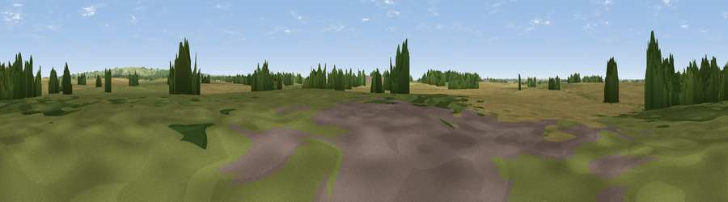

Viewpoint near Osgodby
#41973 in England · top 80% of its area beats it · near Osgodby · path 80 mWhere it is
The exact computed spot (TF 06329 93525). Click the marker for map links.
Public access: the nearest public right of way is about 80 m away — the final stretch may cross private land. Computed from Natural England's CRoW access layer and OpenStreetMap rights of way — not the legal definitive map. Always verify locally.
The view, rendered

A 360° render of this exact spot computed from the terrain model, tree cover and land cover — summer colours, afternoon light, calibrated against photographs of famous viewpoints. Real trees, hedges and buildings will differ in detail.
The panorama
Grey silhouette: terrain skyline in each direction (720 bearings, Earth curvature and refraction included). Dashed green: skyline with trees (+15 m) and buildings (+8 m) as obstacles. Blue strip: how far the ground is visible on each bearing.
Where the view opens
Wedge length = distance to the farthest visible ground on that bearing (vegetation-aware). Rings at 10, 25 and 50 km.
What fills the view
54% cropland · 34% grassland · 11% woodland ·
Angular shares of the visible panorama (visual magnitude), not map area. Landscape diversity 0.43 (0–1 Shannon).
Key numbers
More beautiful places nearby
The staircase of upgrades: each row has a higher view potential than everything closer. Driving times are estimates from straight-line distance, calibrated against real road routing — check an actual route before setting out.
| Place | Direction | Drive | Score |
|---|---|---|---|
| Viewpoint near Osgodby | S · 2 km | ~6 min | 25.1 |
| Viewpoint near Claxby | ENE · 5 km | ~12 min | 71.5 |
| Garrowby Hill (A166 crest) | NNW · 68 km | ~91 min | 71.9 |
| Viewpoint near Acklam | NNW · 72 km | ~96 min | 73.8 |
| Viewpoint near Wharncliffe Side | W · 75 km | ~98 min | 75.2 |
| Beacon Hill | N · 82 km | ~106 min | 79.1 |
| Viewpoint near Speeton | N · 82 km | ~106 min | 80.0 |
| Olivers Mount | N · 93 km | ~118 min | 80.3 |
53.42781, -0.40120 · source: osm peak · position refined by local search. Computed location — check access rights before visiting.